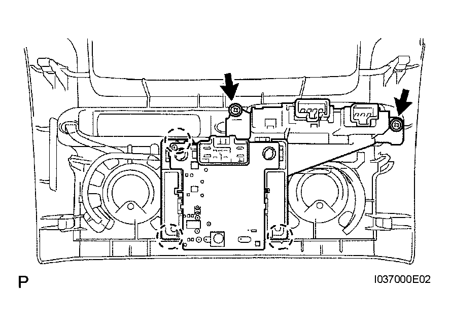
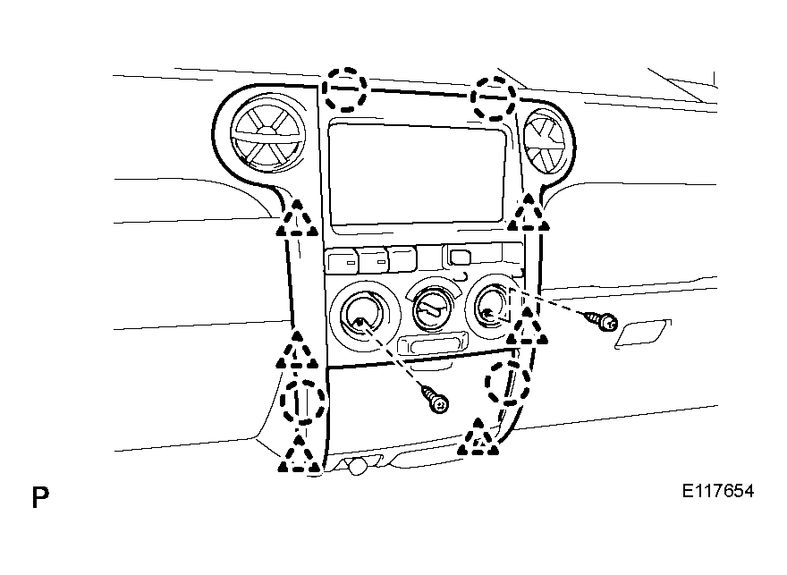
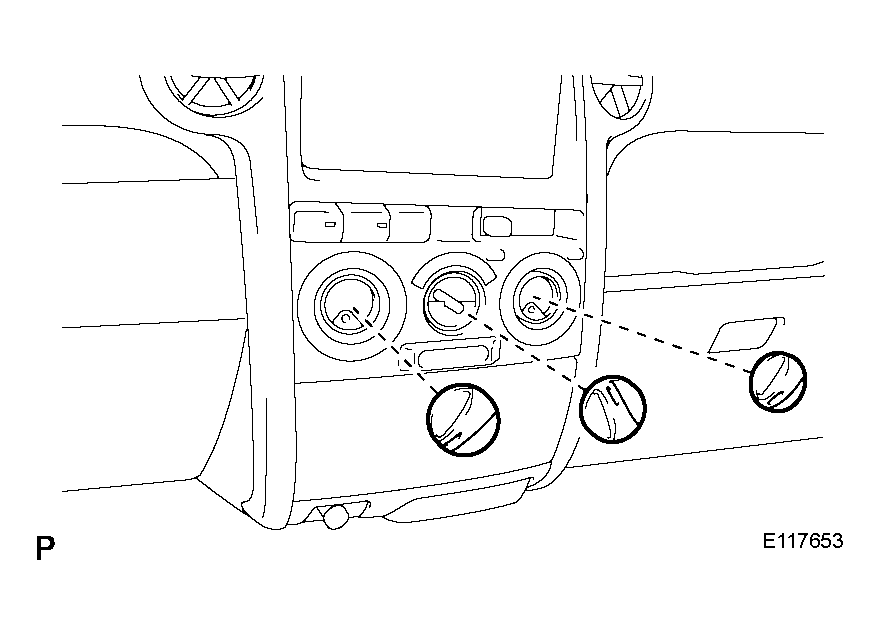

Center Cluster Module Switch: Installation
- INSTALL CENTER CLUSTER MODULE SWITCH
- Attach the 3 claws to install the center cluster module switch.
- Install the 2 screws.

Courtesy of © TOYOTA, LICENSE AGREEMENT TMS1002
- INSTALL INSTRUMENT CLUSTER FINISH PANEL CENTER
- Connect the connectors.
- Attach the 6 clips and 4 claws to install the instrument cluster finish panel.
- Install the 2 screws.

Courtesy of © TOYOTA, LICENSE AGREEMENT TMS1002
- INSTALL HEATER CONTROL KNOB
- Install the 3 heater control knobs.
- CONNECT CABLE TO NEGATIVE BATTERY TERMINAL

Courtesy of © TOYOTA, LICENSE AGREEMENT TMS1002